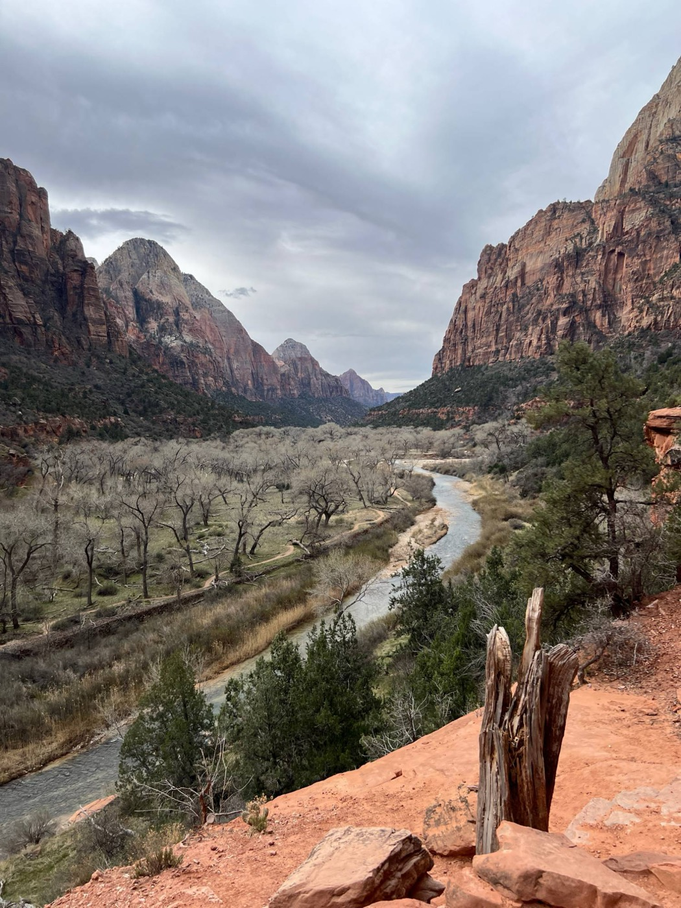
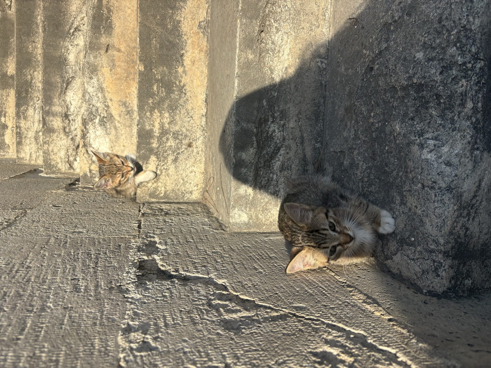
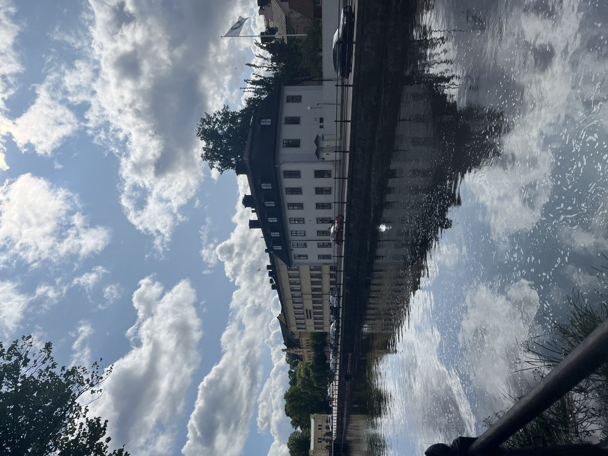
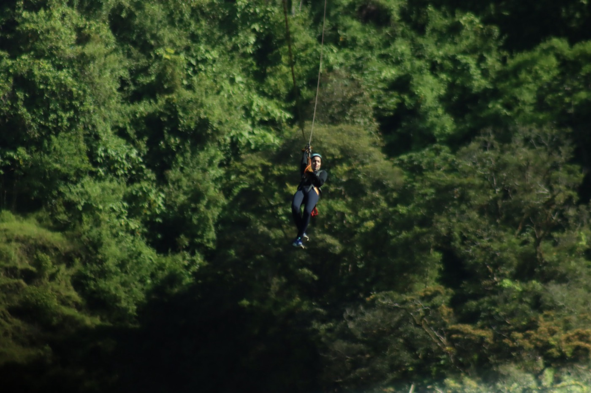

Dance
During COVID, I started learning Kathak, an Indian classical dance form, and have so far completed four of seven levels. In 2024, I started learning salsa.
Football
I am a big football fan. I follow FC Barcelona.
Travel



